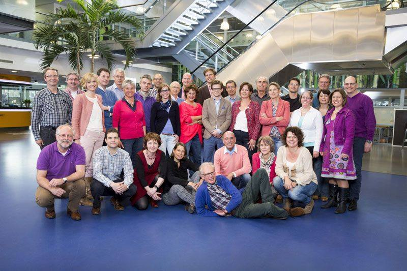
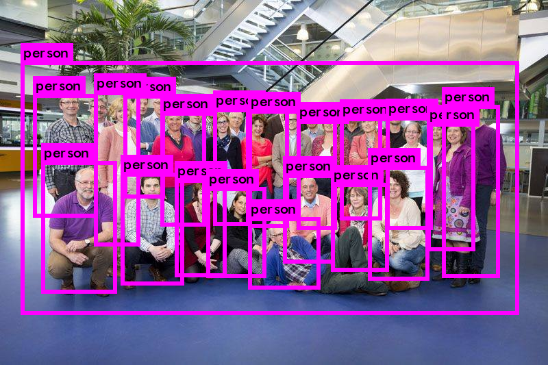
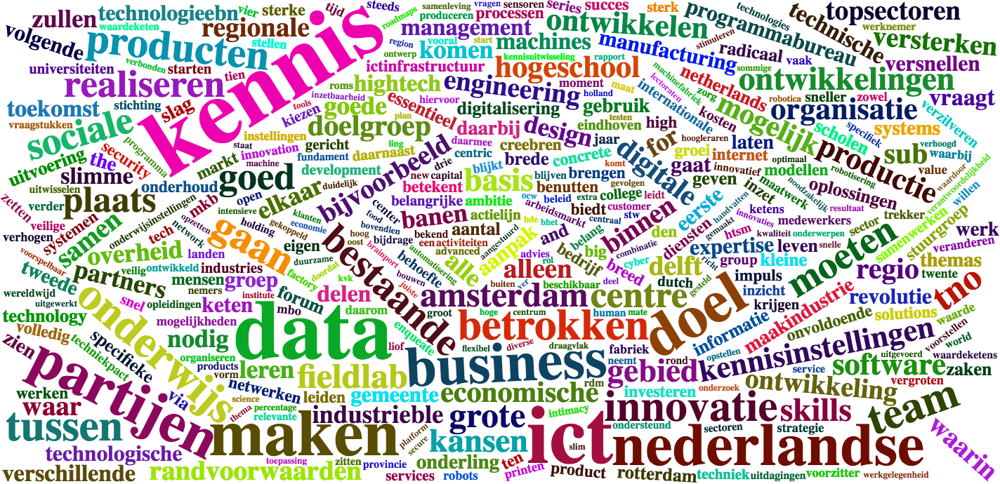
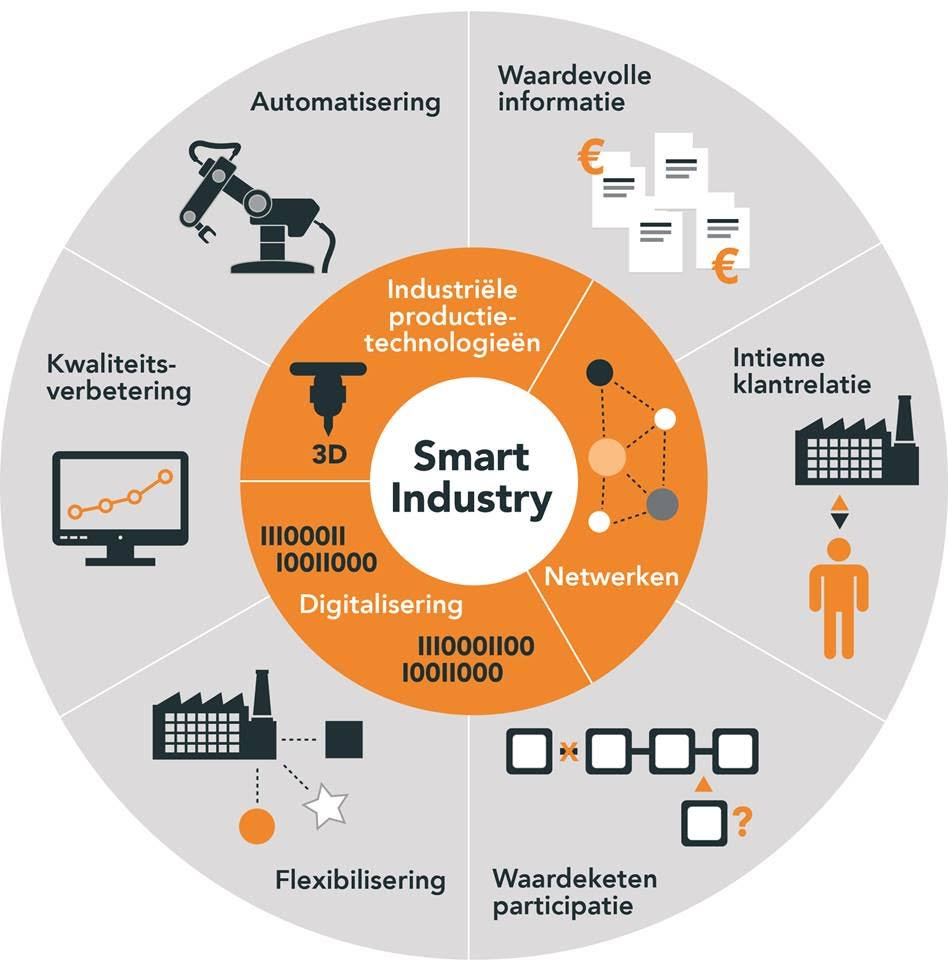
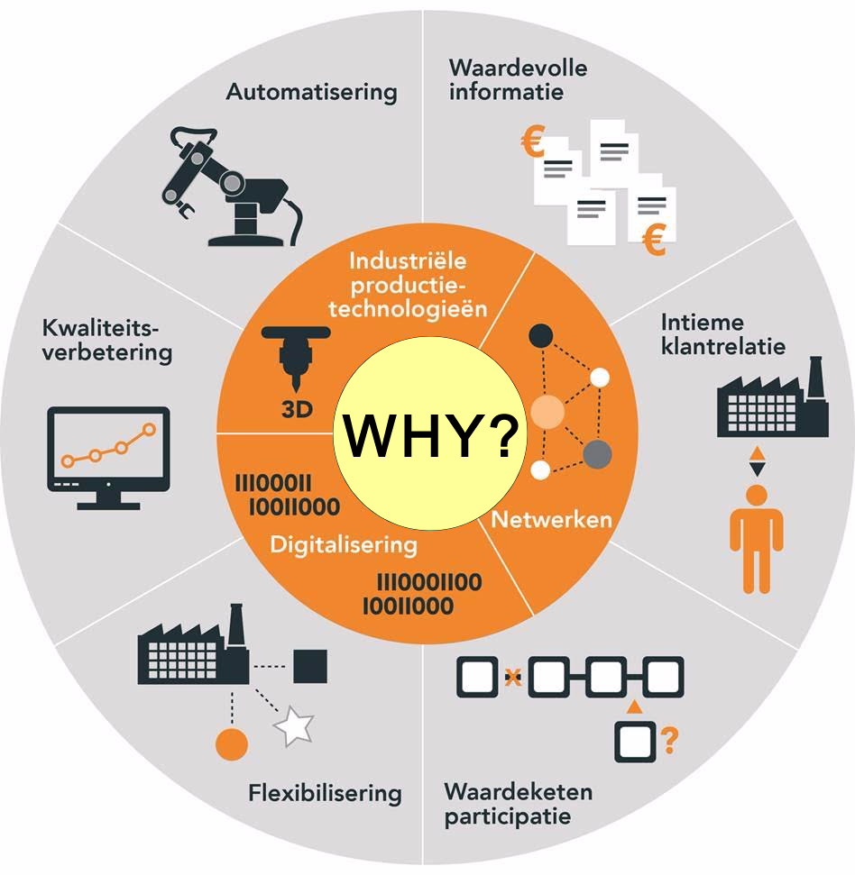
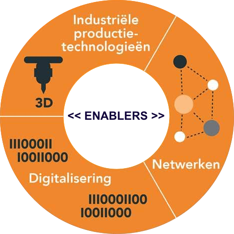
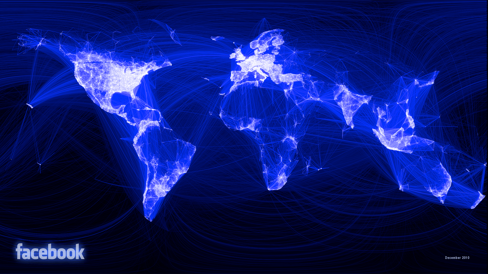
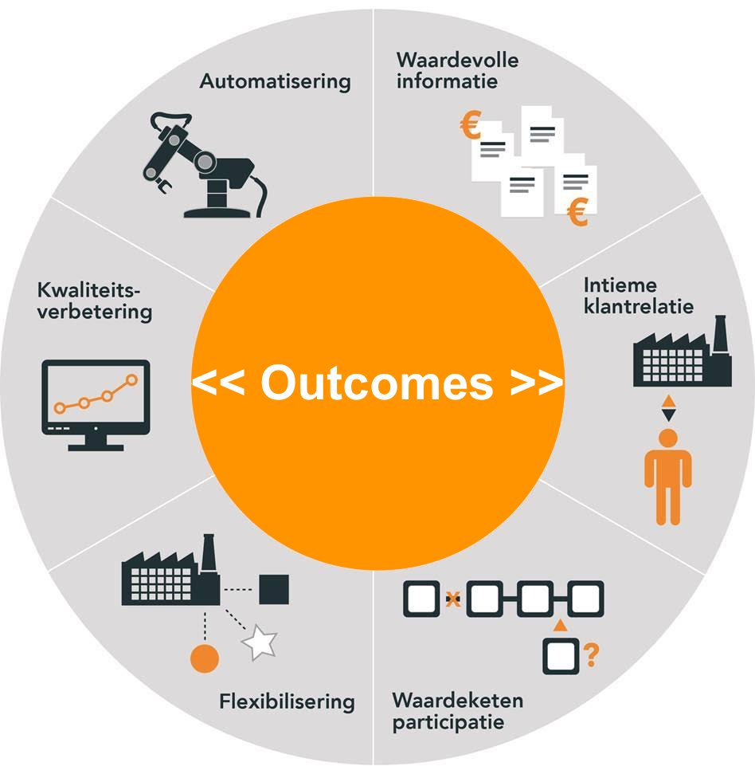

Smart Industry
Next Level Lean
Witek ten Hove
|
 |
|
 |
|
 |
|
 |
|
minorsmart.github.io/presentations/msi
Why?
library(threejs)
data(ego)
graphjs(ego, bg="black")
Disruptie
Stel iemand laat in de Amsterdam Arena op de middenstip een druppel water vallen, een seconde later twee, een seconde later vier, etc. etc.
Hoe lang duurt het voordat de Arena tot aan de nok is gevuld met water?
Disruptie

Disruptie
Google Disrupted
Fragment uit Google CEO Sergey Brin, "I didn't see Artificial Intelligence coming."
Deep Learning
 Deep Learning
Fragment uit YOLO v2
Smart Industry
Smart Industry
Bron: smartindustry.nl
Sinek's Golden Circle
Fragment uit How great leaders inspire action | Simon Sinek
Smart Industry
Bron: smartindustry.nl
Return on Information
Fragment uit The Future of Cognitive Computing
Smart Industry
Bron: smartindustry.nl
Productietechnologie
Fragment uit Producing the world's first 3D-printed bridge
Digitalisering
Fragment uit Demo Process Simulate Human
Netwerken
Netwerken
Fragment uit Unconscious Bias @ Work | Google Ventures
Netwerken
Fragment uit Trash | Track
Smart Industry
Bron: smartindustry.nl
Why >> Enablers >> Outcomes
Opdracht
- Kies een casus ~ why
- Kies een enabler ~ how
- Kies een outcome ~ what
- Beschrijf de relatie casus >> enabler >> outcome
- Beschrijf de rol die jij zou willen spelen in deze casus